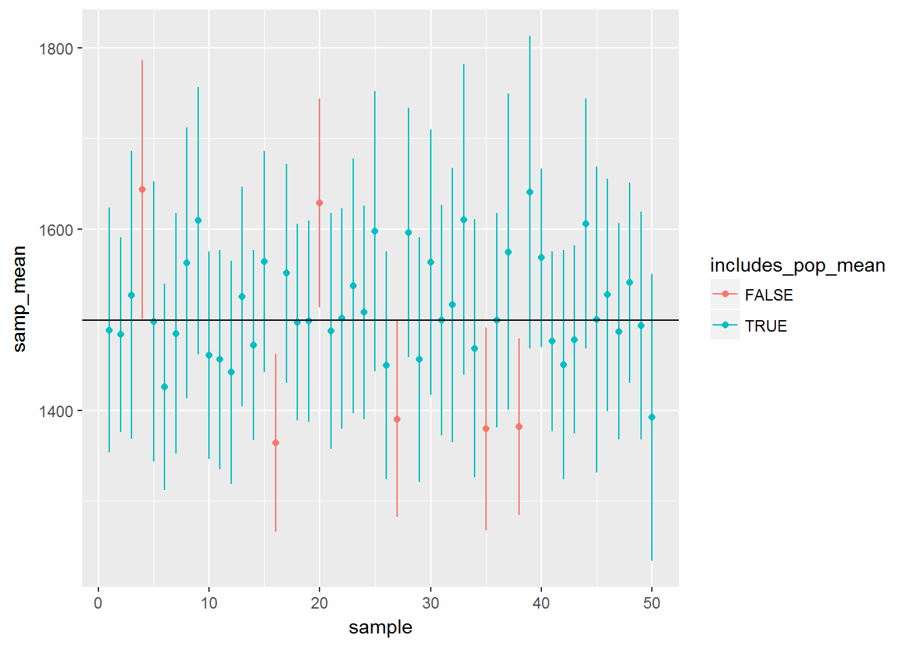

Confidence Intervals
The source for this topic is the Open Intro labs https://www.openintro.org/stat/labs.php
Sampling from Ames, Iowa
If you have access to data on an entire population, say the size of every house in Ames, Iowa, it’s straight forward to answer questions like, “How big is the typical house in Ames?” and “How much variation is there in sizes of houses?”. If you have access to only a sample of the population, as is often the case, the task becomes more complicated. What is your best guess for the typical size if you only know the sizes of several dozen houses? This sort of situation requires that you use your sample to make inference on what your population looks like.
The data
In the previous lab, ``Sampling Distributions’’, we looked at the population data of houses from Ames, Iowa. Let’s start by loading that data set.
load("data/ames.RData")In this lab we’ll start with a simple random sample of size 60 from the population. Specifically, this is a simple random sample of size 60. Note that the data set has information on many housing variables, but for the first portion of the lab we’ll focus on the size of the house, represented by the variable Gr.Liv.Area.
population <- ames$Gr.Liv.Area
head(population)## [1] 1656 896 1329 2110 1629 1604samp <- sample(population, 60)
samp## [1] 882 2787 2152 1780 2462 1672 1378 1096 988 1651 1320 1358 1411 1988
## [15] 1004 924 1200 1437 2728 1177 1092 2332 1728 1520 1008 1797 950 2331
## [29] 1092 1138 894 1980 1820 1151 1826 1995 1440 2069 2439 1433 1720 1080
## [43] 900 930 1876 932 1851 2794 1113 1595 1100 2690 796 1306 1969 1661
## [57] 1142 1520 1721 1141Describe the distribution of your sample. What would you say is the “typical” size within your sample? Also state precisely what you interpreted “typical” to mean.
Would you expect another student’s distribution to be identical to yours? Would you expect it to be similar? Why or why not?
Confidence intervals
One of the most common ways to describe the typical or central value of a distribution is to use the mean. In this case we can calculate the mean of the sample using,
sample_mean <- mean(samp)
sample_mean## [1] 1554.45Return for a moment to the question that first motivated this lab: based on this sample, what can we infer about the population? Based only on this single sample, the best estimate of the average living area of houses sold in Ames would be the sample mean, usually denoted as \(\bar{x}\) (here we’re calling it sample_mean). That serves as a good point estimate but it would be useful to also communicate how uncertain we are of that estimate. This can be captured by using a confidence interval.
We can calculate a 95% confidence interval for a sample mean by adding and subtracting 1.96 standard errors to the point estimate (See Section 4.2.3 if you are unfamiliar with this formula).
se <- sd(samp) / sqrt(60)
se## [1] 69.85651lower <- sample_mean - 1.96 * se
upper <- sample_mean + 1.96 * se
c(lower, upper)## [1] 1417.531 1691.369This is an important inference that we’ve just made: even though we don’t know what the full population looks like, we’re 95% confident that the true average size of houses in Ames lies between the values lower and upper. There are a few conditions that must be met for this interval to be valid.
- For the confidence interval to be valid, the sample mean must be normally distributed and have standard error \(s / \sqrt{n}\). What conditions must be met for this to be true?
Confidence levels
- What does “95% confidence” mean? If you’re not sure, see Section 4.2.2.
In this case we have the luxury of knowing the true population mean since we have data on the entire population. This value can be calculated using the following command:
mean(population)## [1] 1499.69Does your confidence interval capture the true average size of houses in Ames? If you are working on this lab in a classroom, does your neighbor’s interval capture this value?
Each student in your class should have gotten a slightly different confidence interval. What proportion of those intervals would you expect to capture the true population mean? Why? If you are working in this lab in a classroom, collect data on the intervals created by other students in the class and calculate the proportion of intervals that capture the true population mean.
Using R, we’re going to recreate many samples to learn more about how sample means and confidence intervals vary from one sample to another. Loops come in handy here (If you are unfamiliar with loops, review the Sampling Distribution Lab).
Here is the rough outline:
- Obtain a random sample.
- Calculate and store the sample’s mean and standard deviation.
- Repeat steps (1) and (2) 50 times.
- Use these stored statistics to calculate many confidence intervals.
But before we do all of this, we need to first create empty vectors where we can save the means and standard deviations that will be calculated from each sample. And while we’re at it, let’s also store the desired sample size as n.
samp_mean <- rep(NA, 50)
samp_sd <- rep(NA, 50)
n <- 60Now we’re ready for the loop where we calculate the means and standard deviations of 50 random samples.
for(i in 1:50){
samp <- sample(population, n) # obtain a sample of size n = 60 from the population
samp_mean[i] <- mean(samp) # save sample mean in ith element of samp_mean
samp_sd[i] <- sd(samp) # save sample sd in ith element of samp_sd
}Lastly, we construct the confidence intervals.
lower_vector <- samp_mean - 1.96 * samp_sd / sqrt(n)
upper_vector <- samp_mean + 1.96 * samp_sd / sqrt(n)Lower bounds of these 50 confidence intervals are stored in lower_vector, and the upper bounds are in upper_vector. Let’s view the first interval.
c(lower_vector[1], upper_vector[1])## [1] 1353.761 1623.472On your own
Let’s visualize these confidence intervals.
library(ggplot2)
df <- data.frame(sample = 1:50, samp_mean = samp_mean, lower = lower_vector, upper = upper_vector,
includes_pop_mean = mean(population) < upper_vector & mean(population) > lower_vector)
ggplot(df, aes(sample, samp_mean, color = includes_pop_mean)) +
geom_segment(aes(x = sample, y = lower, xend = sample, yend = upper)) +
geom_point() +
geom_hline(yintercept = mean(population))
Pick a confidence level of your choosing, provided it is not 95%. What is the appropriate critical value?
Calculate 50 confidence intervals at the confidence level you chose in the previous question. You do not need to obtain new samples, simply calculate new intervals based on the sample means and standard deviations you have already collected. Using the
ggplot()code above, plot all intervals and calculate the proportion of intervals that include the true population mean. How does this percentage compare to the confidence level selected for the intervals?
This is a product of OpenIntro that is released under a Creative Commons Attribution-ShareAlike 3.0 Unported. This lab was written for OpenIntro by Andrew Bray and Mine Çetinkaya-Rundel.